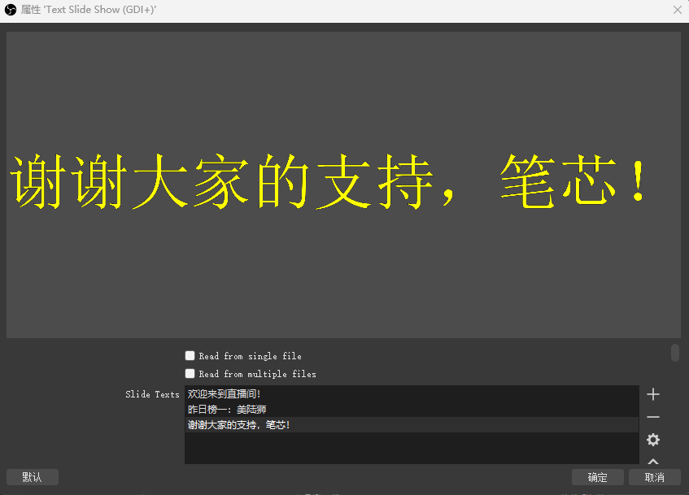

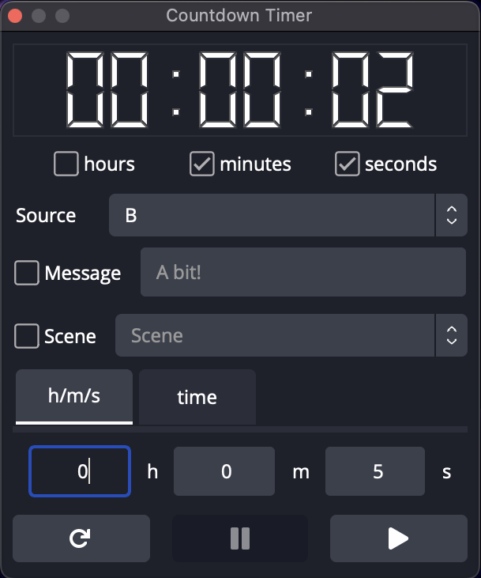
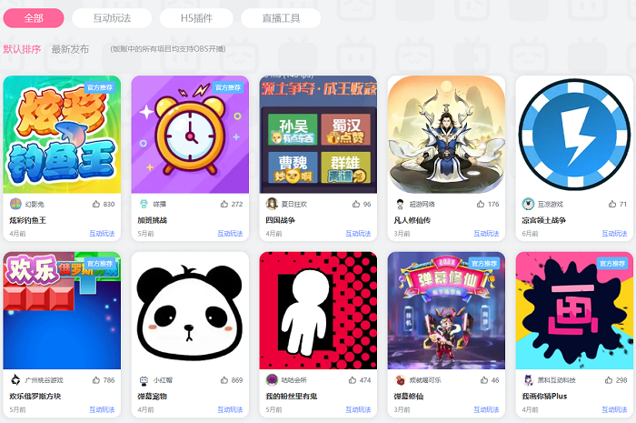
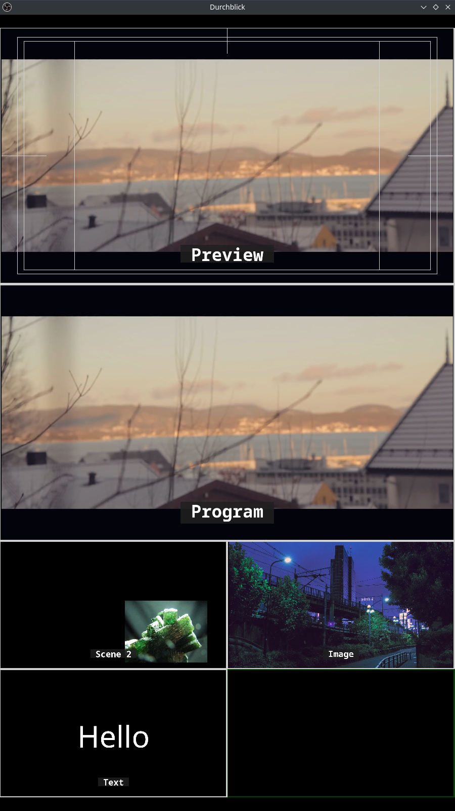
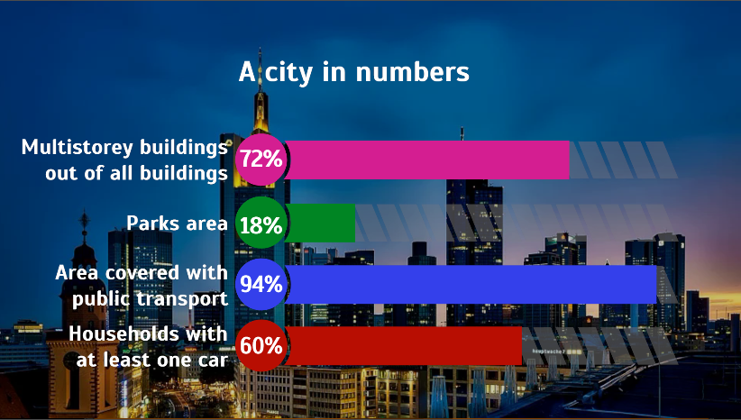
Animated captions with OBS controller and a preview function 1.0.1
一包用于流式传输的动画屏幕字幕。入门套件包括下三分之一、定位器、归因和标头。要自定义内容并控制输入和输出动画，可以使用控制板...
立即下载 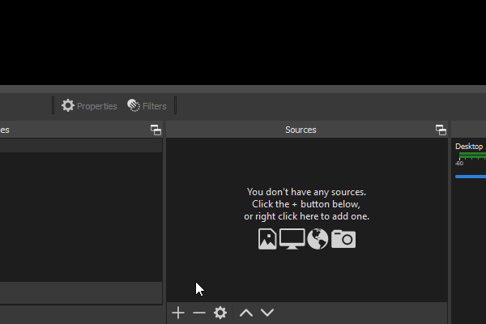
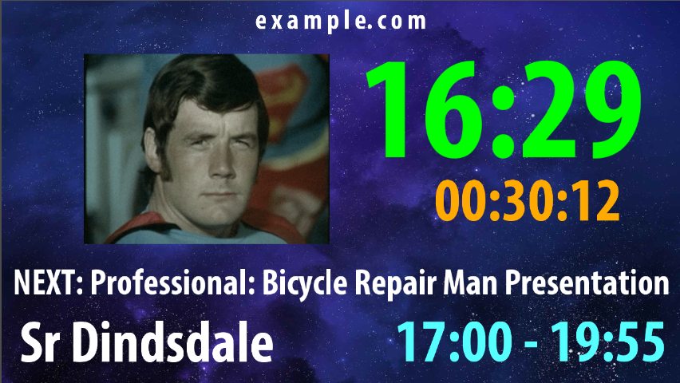
Conference Schedule with Clock and Countdown 0.1
带时钟和倒计时的动态会议时间表OBS插件，显示时钟，当前事件信息，以及事件结束或下一个事件信息的倒计时...
立即下载 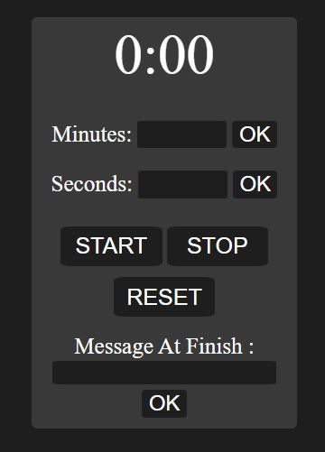
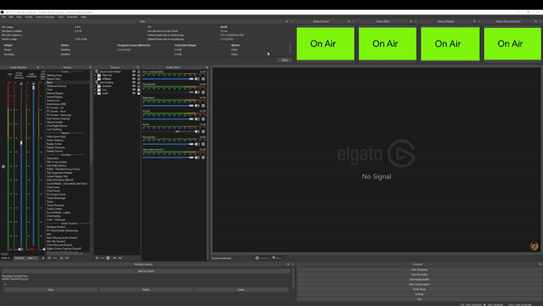
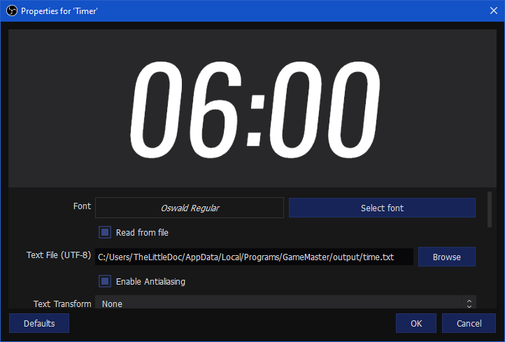
GameMaster v2.1.1游戏大师 v2.1.1
GameMaster是一个基于Python的OBS体育记分牌工具。除了基本的得分功能外，GameMaster 还可以使用简单的 JSON 配置文件管理比赛时间...
立即下载 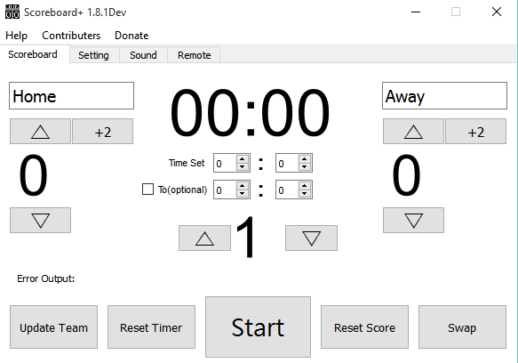